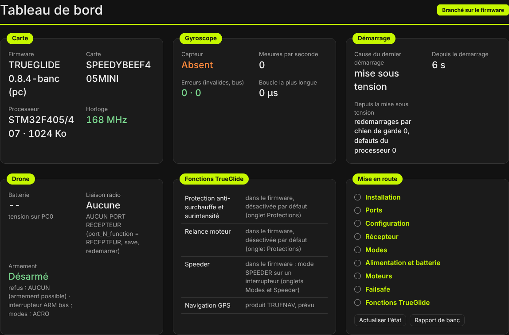
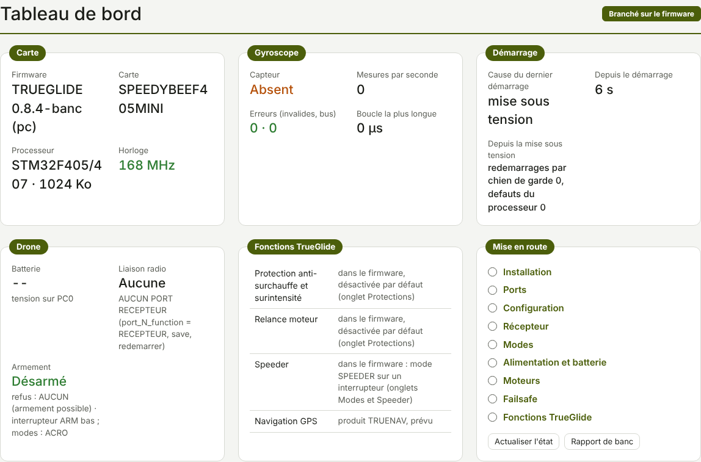

TRUEGLIDE
TRUEGLIDE Tableau de bord
Le Tableau de bord est le premier onglet du logiciel : l'état de la carte en un coup d'œil, dès la connexion par USB. Rien ne s'y règle : il lit la carte et renvoie vers l'onglet qui convient.


Carte et gyroscope
- Carte : version du firmware, nom de la carte, processeur et taille de sa mémoire, horloge. Une horloge plus basse que prévu (quartz absent) s'affiche en couleur d'alerte.
- Gyroscope : capteur reconnu (ou « Absent »), mesures par seconde, erreurs (mesures invalides, erreurs de bus) et durée de la boucle la plus longue depuis le démarrage.
Démarrage
Cause du dernier démarrage (mise sous tension, chien de garde, défaut du processeur…), temps écoulé depuis, et compteurs depuis la mise sous tension. Un redémarrage par le chien de garde ou un défaut du processeur est à signaler avec un rapport de banc.
Drone
- Batterie : tension mesurée par la carte ; « -- » quand elle n'est pas connue (USB seul).
- Liaison radio : état du récepteur, ou ce qu'il manque pour l'avoir (port à régler dans Ports).
- Armement : armé ou désarmé, et la liste des refus d'armement en cours (interrupteur ARM, angle, logiciel connecté…), avec les modes actifs.
Fonctions TrueGlide
Rappel des fonctions propres à TrueGlide : protection anti-surchauffe et surintensité et relance d'un moteur (Protections, désactivées par défaut), Speeder (mode sur un interrupteur). La navigation GPS appartient au produit TRUENAV, prévu.
Mise en route
La liste des onglets à parcourir pour un nouveau drone, dans l'ordre (voir Mise en route). Actualiser l'état relit la carte ; Rapport de banc ouvre l'onglet du même nom.